건설재료시험기사 (2015-03-08 기출문제)
1과목: 콘크리트공학
1. 콘크리트의 압축강도 시험에서 공시체의 형상 및 치수에 관한 설명으로 옳은 것은? (단, H는 공시체의 높이, D는 변장 또는 지름)
- 원주형 공시체의 경우 H/D의 값이 작을수록 압축강도가 크다.
- H/D가 동일할 경우 원주형 공시체가 각주형 공시체보다 작은 강도를 나타낸다.
- 형상이 닮은꼴이면 치수가 클수록 큰 강도를 나타낸다.
- 일반적으로 콘크리트 압축강도란 H/D의 값이 1인 공시체를 사용하여 구한 값으로 한다.
(정답률: 59%)

2. 지름이 150mm이고 길이가 300mm인 원주형공시체에 대한 쪼갬인장시험결과 최대하중이 160Kn이라고 할 경우 이 공시체의 인장강도는?
- 1.78MPa
- 2.26MPa
- 3.54MPa
- 4.12MPa
(정답률: 72%)
3. 오토클레이브(Autoclave)양생에 대한 설명으로 틀린 것은?
- 양생온도 180℃정도, 증기압 0.8MPa정도의 고온고압 상태에서 양생하는 방법이다.
- 오토클레이브양생을 실시한 콘크리트의 외관은 보통양생한 포틀랜드시멘트 콘크리트 색의 특징과 다르며, 흰색을 띤다.
- 오토클레이브양생을 실시한 콘크리트는 어느 정도의 취성을 가지게 된다.
- 오토클레이브양생은 고강도 콘크리트를 얻을 수 있어 철근콘크리트 부재에 적용할 경우 특히 유리하다.
(정답률: 76%)
4. 한중 콘크리트에서 비볐을 때의 콘크리트 온도가 25℃, 주위의 대기온도가 15℃이고 비빈 후부터 타설이 끝났을 때까지의 시간이 2시간이 소요되었을 때, 타설이 끝났을 때 콘크리트의 온도는 몇 도인가?(단, 시간당 온도저하율은 비볐을 때의 콘크리트 온도와 주위의 온도의 차의 15%로 가정한다.)
- 20℃
- 22℃
- 24℃
- 26℃
(정답률: 72%)
5. 고강도 콘크리트에 대한 일반적인 설명으로 틀린 것은?
- 고강도 콘크리트의 설계기준압축강도는 일반적으로 40MPa 이상으로 하며, 고강도 경량골재 콘크트는 27MPa 이상으로 한다.
- 고강도 콘크리트의 제조 시 단위 시멘트량은 소요의 워커빌리티 및 강도를 얻을 수 있는 범위 내에서 가능한 적게 되도록 시험에 의해 정하여야 한다.
- 고강도 콘크리트의 제조 시 잔골재율은 소요의 워커빌리티를 얻도록 시험에 의하여 결정하여야 하며, 가능한 적게 하도록 한다.
- 고강도 콘크리트의 워커빌리티 확보를 위해 AE감수제를 사용함을 원칙으로 한다.
(정답률: 59%)
6. 잔골재의 유해물 함유량 한도(질량 백분율)을 나타낸 것 중 잘못된 것은?
- 염화물(NaCl 환산량)의 최대값은 0.3%이다.
- 콘크리트의 표면이 마모작용을 받는 경우, 0.08mm체 통과량의 최대값은 3.0% 이다.
- 점토덩어리의 최대값은 1.0%이다.
- 콘크리트의 외관이 중요한 경우, 석탄, 갈탄 등으로 밀도 0.002g/㎣의 액체에 뜨는 것의 최대값은 0.5%이다.
(정답률: 55%)
7. 서중 콘크리트에 대한 설명으로 틀린 것은?
- 콘크리트를 타설할 떄의 콘크리트의 온도는 35℃이하이어야 한다.
- 하루 평균기온이 25℃를 초과하는 것이 예상되는 경우 서중 콘크리트로 시공하여야 한다.
- 콘크리트는 비빈 후 즉시 타설하여야 하며, 지연형 감수제를 사용하는 등의 일반적인 대책을 강구한 경우 이외에는 1.5시간 이내에 타설하여야 한다.
- 일반적으로 기온 10℃의 상승에 대하여 단위수량은 2~5% 증가하므로 소요의 압축강도를 확보하기 위해서는 단위수량에 비례하여 단위 시멘트량의 증가를 검토하여야 한다.
(정답률: 56%)
8. 경량콘크리트의 특징으로 옳지 않은 것은?
- 강도가 낮다.
- 탄성계수가 작다.
- 열전도율이 작다.
- 흡수율이 작다.
(정답률: 63%)
9. 구조물의 보강 공법에 해당되지 않는 것은?
- 주입공법
- 세로보 증설공법
- 브레이싱 보강 공
- 강판 덧붙이기 공법
(정답률: 65%)
10. 급속 동결융해에 대한 콘크리트의 저항시험 방법에서 동결융해 1사이클의 소요시간으로 옳은 것은?
- 1시간 이상, 2시간 이하로 한다.
- 2시간 이상, 4시간 이하로 한다.
- 4시간 이상, 5시간 이하로 한다.
- 5시간 이상, 7시간 이하로 한다.
(정답률: 75%)
11. 구조체 콘크리트의 압축강도 비파괴 시험에 사용되는 슈미트 해머로써 구조체가 경량 콘크리트인 경우 사용하는 슈미트 해머는?
- N형 슈미트 해머
- L형 슈미트 해머
- P형 슈미트 해머
- M형 슈미트 해머
(정답률: 77%)
12. 시방배합결과 단위잔골재량 700kg/m3, 단위굵은골재량 1,300kg/m3을 얻었다. 현장 골재의 입도만을 고려하여 현장배합으로 수정하면 굵은골재의 양은? (단, 현장 잔골재 : 야적 상태에서 포함된 굵은골재=2%, 현장 굵은골재 : 야적 상태에서 포함된 잔골재=4%)
- 1,284kg/m3
- 1,316kg/m3
- 1,340kg/m3
- 1,400kg/m3
(정답률: 60%)
13. 15회의 시험실적으로부터 구한 콘크리트 압축강도의 표준편차가 2.5MPa이고, 콘크리트의 설계기준 압축강도가 30MPa인 경우 콘크리트의 배합강도는?
- 32.3MPa
- 33.3MPa
- 33.9MPa
- 34.9MPa
(정답률: 47%)
14. 일반콘크리트의 비비기는 미리 정해 둔 비비기 시간의 최대 몇 배 이상 계속해서는 안 되는가?
- 2배
- 3배
- 4배
- 5배
(정답률: 82%)
15. 콘크리트 표준시방서의 규정에 따라 기둥부재에 타설한 고강도 콘크리트를 슬래브-기둥의 접합면으로부터 슬래브쪽으로 0.6m정도 내민 길이를 확보하여 콘크리트를 타설하였다. 기둥에 타설되는 콘크리트의 설계기준 압축강도가 52MPa일 때, 슬래브에 타설되는 콘크리트의 설계기준압축강도는 얼마 이하의 값을 갖고 있어야 하는가?
- 30MPa
- 37MPa
- 40MPa
- 47MPa
(정답률: 46%)
16. 콘크리트 타설 및 다지기 작업 시 주의해야 할 사항으로 틀린 것은?
- 연직 시공 일 때 슈트 등의 배출구와 타설면까지의 높이는 1.5m이하를 원칙으로 한다.
- 내부진동기를 이용하여 진동다지기를 할 경우 내부진동기를 하층의 콘크리트 속으로 0.1m 정도 찔러 넣는다.
- 타설한 콘크리트를 거푸집 안에서 횡방향으로 이동시켜서는 안 된다.
- 내부진동기를 사용하여 진동다지기를 할 경우 삽입간격은 일반적으로 1m 이하로 하는 것이 좋다.
(정답률: 69%)
17. 고유동 콘크리트의 특성을 평가하는 방법으로 틀린 것은?
- 유동성-슬럼프 플로시험
- 재료 분리 저항성-슬럼프 플로 600mm 도달시간
- 고유동 콘크리트 품질관리는 재료분리 저항성,유동성,자기충전성 품질관리가 필요하다.
- 자기 충전성-충전장치를 이용한 간극 통과성 시험
(정답률: 50%)
18. 현장 배합에 의한 재료량 및 재료의 계량값이 다음 표와 같을 때 계량오차를 초과하여 불합격인 재료는?
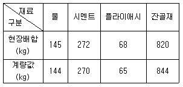
- 물
- 시멘트
- 플라이애시
- 잔골재
(정답률: 77%)
19. 숏크리트에 대한 설명으로 옳지 않은 것은?
- 거푸집이 불필요하다.
- 공법에는 건식법과 습식법이 있다.
- 평활한 마무리면을 얻을 수 있다.
- 작업 시에 분진이 많이 발생한다.
(정답률: 77%)
20. 프리스트레스트 콘크리트의 그라우트의 품질 기준으로 옳지 않은 것은?
- 블리딩률은 5% 이하를 표준으로 한다.
- 팽창성 그라우트에서의 팽창률은 0~10%를 표준으로 한다.
- 물-결합재비는 45%이하로 한다.
- 염화물이온의 총량은 사용되는 단위 시멘트량의 0.08%이하를 원칙으로 한다.
(정답률: 71%)
2과목: 건설시공 및 관리
21. 다음의 주어진 조건을 이용하여 3점시간법을 적용하여 activity time을 결정하면? (조건 : 표준값 = 5시간, 낙관값 = 3시간, 비관값 = 10시간)
- 4.5시간
- 5.0시간
- 5.5시간
- 6.0시간
(정답률: 76%)
22. 콘크리트 포장 이음부의 시공과 관계가 가장 적은 것은?
- 슬립폼(slip form)
- 타이바(tie bar)
- 다우웰바(dowel bar)
- 프라이머(primer)
(정답률: 73%)
23. 사장교를 케이블 형상에 따라 분류할 때 그 종류가 아닌 것은?
- 플랫형(pratt)
- 방사형(radiating)
- 하프형(harp)
- 별형(star)
(정답률: 65%)
24. 지하층을 구축하면서 동시에 지상층도 시공이 가능한 역타공법(Top-down공법)이 현장에서 많이 사용된다. 역타공법의 특징으로 틀린 것은?
- 인접건물이나 인접지대에 영향을 주지 않는 지하굴착 공법이다.
- 대지의 활용도를 극대화할 수 있으므로 도심지에서 유리한 공법이다.
- 지하층 슬래브와 지하벽체 및 기초 말뚝기둥과의 연결 작업이 쉽다.
- 지하주벽을 먼저 시공하므로 지하수 차단이 쉽다.
(정답률: 67%)
25. 케이슨 기초 중 오픈케이슨 공법의 특징에 대한 설명으로 틀린 것은?
- 굴착 시 히빙이나 보일링 현상의 우려가 있다.
- 기계설비가 비교적 간단하다.
- 일반적인 굴착깊이는 30~40m 정도로 침하 깊이에 제한을 받는다.
- 큰 전석이나 장애물이 있는 경우 침하작업이 지연된다.
(정답률: 69%)
26. 토적곡선의 성질에 대한 설명으로 틀린 것은?
- 토적곡선의 하향구간은 쌓기 구간이고 상향구간은 깎기 구간이다.
- 깎기에서 쌓기까지의 평균운반거리는 깎기의 중심과 쌓기의 중심간 거리로 표시된다.
- 토적곡선이 기선의 위쪽에서 끝이 나면 토량이 부족하고 아래쪽에서 끝이 나면 과잉토량이 된다.
- 기선에 평행한 임의의 직선을 그어 토적곡선과 교차하는 인접한 교차점 사이의 깎기량과 쌓기량은 서로 같다.
(정답률: 75%)
27. 숏크리트 리바운드(Rebound)량을 감소시키는 방법으로 옳은 것은?
- 시멘트량을 줄인다.
- 분사 부착면을 거칠게 한다.
- 조골재를 19mm 이상으로 한다.
- 벽면과 45˚각도로 분사한다.
(정답률: 68%)
28. 댐 기초처리를 위한 그라우팅의 종류 중 다음의 표에서 설명하는 것은?
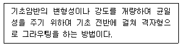
- 커튼 그라우팅
- 콘솔리데이션 그라우팅
- 블랭킷 그라우팅
- 콘택트 그라우팅
(정답률: 70%)
29. 교대 날개벽의 가장 주된 역할은?
- 미관의 향상
- 교대하중의 부담 감소
- 교대배면 성토의 보호 및 세굴방지
- 유량을 경감시켜 토사의 퇴적을 촉진시켜 교대의 보호증진
(정답률: 82%)
30. 수중 콘크리트를 타설할 때 가장 많이 사용하는 기구는 다음 중 어느 것인가?
- 버킷
- 슈트
- 트레미
- 콘크리트 플레이서
(정답률: 70%)
31. 전장비 중량 22t, 접지장 270cm,캐터필러 폭 55cm, 캐터필러의 중심거리가 2m일 때 불도저의 접지압은 얼마인가?
- 0.37kg/cm2
- 0.74kg/cm2
- 1.11kg/cm2
- 2.96kg/cm2
(정답률: 48%)
32. 항타말뚝은 주로 해머를 이용하여 말뚝을 지반에 근입시킨다. 다음 중 항타말뚝에 사용되는 디젤해머의 특징에 대한 설명으로 틀린 것은?
- 취급이 비교적 간단하다.
- 대설비가 적어 작업성과 기동성이 있다.
- 배기가스 및 소음공해가 있다.
- 연약지반에서 매우 유용하다.
(정답률: 69%)
33. 운반토량 1,200m3을 용적이 8m3인 덤프 트럭으로 운반하려고 한다. 트럭의 평균속도는 10km/h이고, 상하차 시간이 각각 4분일 때 하루에 전량을 운반하려면 몇 대의 트럭이 필요한가? (단, 1일 덤프 트럭 가동시간은 8시간이며, 토사장까지의 거리는 2km이다.)
- 10대
- 13대
- 15대
- 18대
(정답률: 45%)
34. 토취장에서 흙을 적재하여 고속도로의 노체를 성토코자 한다. 노체에 다짐을 시행할 때 자연상태 때의 흙의 체적을 1이라 하고, 느슨한 상태에서 1.25, 다져진 상태에서 토량변화율이 0.8이라면 본공사의 토량환산계수는?
- 0.64
- 0.80
- 0.70
- 1.25
(정답률: 54%)
35. 주공정선(critical path)의 성질에 관한 다음 설명 중 옳지 않은 것은?
- 현장 소장으로서 중점 관리해야 할 활동의 연속을 뜻한다.
- 크리티컬 패스의 지연은 곧 공기연장을 뜻한다.
- 자재나 장비를 최우선적으로 투입해야 하는 공정이다.
- 활동의 연속이 최단 공기를 갖게 되며 자원배당 시 조정이 가능한 활동이다.
(정답률: 50%)
36. TBM(Tunnel Boring Machine)에 의한 굴착의 특징이 아닌 것은?
- 안정성(安定性)이 높다.
- 여굴에 의한 낭비가 적다.
- 노무비 절약이 가능하다.
- 복잡한 지질의 변화에 대응이 용이하다.
(정답률: 75%)
37. 다음의 표에서 설명하는 흙막이 굴착공법의 명칭은?
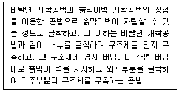
- 트렌치 컷 공법
- 역타 공법
- 언더피닝 공법
- 아일랜드 공법
(정답률: 60%)
38. 아스팔트포장 표면에 발생하는 소성변형(Rutting)에 대한 설명으로 틀린 것은?
- 침입도가 작은 아스팔트를 사용하거나 골재의 최대 치수가 큰 경우에 발생하기 쉽다.
- 종방향 평탄성에는 심각하게 영향을 주지는 않지만 물이 고인다면 수막현상을 일으켜 주행 안전성에 심각한 영향을 줄 수 있다.
- 하절기의 이상 고온 및 아스콘에 아스팔트량이 많은 경우 발생하기 쉽다.
- 외기온이 높고 중차량이 많은 저속구간 도로에서 주로 발생하고, 교량구간은 토공구간에 비해 적게 발생한다.
(정답률: 61%)
39. PERT와 CPM에 대한 설명으로 틀린 것은?
- 작업에 편리한 인원수를 합리적으로 결정할 수 없다.
- 각 작업간의 시간적인 상호관계가 명확하다.
- 각 작업의 착공일이 명확해지므로 필요자재의 재고 관리가 원활하게 된다.
- 각 작업의 지연으로 인해 다른 작업에 미치는 영향 범위를 검토할 수 있다.
(정답률: 59%)
40. 절토사면의 안전율을 증대시키기 위하여 적용하는 사면보강공법이 아닌 것은?
- 앵커공법
- 숏크리트
- Soil nailing 공법
- 억지말뚝공법
(정답률: 60%)
3과목: 건설재료 및 시험
41. 강재의 가공법에 의한 분류에 속하지 않는 것은?
- 압연
- 제강
- 인발
- 단조
(정답률: 52%)
42. 양질의 포졸란을 사용한 콘크리트의 일반적인 특징으로 보기 어려운 것은?
- 워커빌리티가 향상된다.
- 블리딩 현상이 감소한다.
- 발열량이 적어지므로 단면이 큰 콘크리트에 적합하다.
- 초기강도는 크나 장기강도가 작아진다.
(정답률: 68%)
43. 암석의 구조에 대한 설명으로 틀린 것은?
- 절리 : 암석 특유의 천연적으로 갈라진 금으로 화성암에서 많이 보임
- 석목 : 암석의 갈라지기 쉬운 면을 말하며 돌눈이라고도 함
- 층리 : 암석을 구성하는 조암광물의 집합상태에 따라 생기는 눈 모양
- 편리 : 변성암에서 된 절리로 암석이 얇은 판자모양 등으로 갈라지는 성질
(정답률: 67%)
44. 도로의 표층공사에서 사용되는 가열아스팔트 혼합물의 안정도 시험은 어느 방법으로 판정하는가?
- 엥글러시험
- 레드우드시험
- 마샬시험
- 박막가열시험
(정답률: 64%)
45. 석재를 모양에 따라 분류할 경우 다음의 표에서 설명하는 것은?
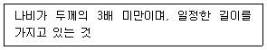
- 사고석
- 견치석
- 각석
- 판석
(정답률: 45%)
46. 콘크리트용 혼화제인 AE제에 의한 연행공기량에 영향을 미치는 요인에 대한 설명 중 틀린 것은?
- 사용 시멘트의 비표면적이 클수록 연행공기량은 증가한다.
- 플라이애시를 혼화재로 사용할 경우 미연소 탄소 함유량이 많으면 연행공기량이 감소한다.
- 단위잔골재량이 많으면, 연행공기량은 감소한다.
- 콘크리트의 온도가 높으면 연행공기량은 감소한다.
(정답률: 29%)
47. 어떤 콘크리트용 굵은 골재에 유해물인 점토덩어리의 함유량이 0.20%이었다면, 연한 석편의 함유량은 최대 얼마 이하이어야 하는가?(단, 철근콘크리트에 사용하는 경우)
- 3.8%
- 4%
- 4.8%
- 5%
(정답률: 44%)
48. 시멘트의 응결시험 시 습기함이나 습기실의 상대습도는 몇%이상이어야 하는가?
- 30%
- 50%
- 70%
- 90%
(정답률: 58%)
49. 아스팔트 시료를 일정비율 가열하여 강구의 무게에 의해 시료가 25.4mm 내려갔을 때 온도를 측정한다. 이는 무엇을 구하기 위한 시험인가?
- 침입도
- 인하점
- 연소점
- 연화점
(정답률: 66%)
50. 다루기 쉽고 안전하여 안전폭약이라고도 하며, 흡습성이 보통 폭약보다 크므로 취급 시 방습에 특히 유의를 해야 하나, 값이 저렴하여 채석, 채광, 갱 등의 발파에 많이 사용하는 폭약은?
- 질산암모늄계 폭약
- 칼릿
- 다이너마이트
- 니트로글리세린
(정답률: 43%)
51. 시멘트의 주요 조성광물 중 중용열 포틀랜드 시멘트의 장기 강도를 높여 주기 위해 그 함유량을 다른 포틀랜드 시멘트보다 증가시키는 성분은?
- C3S
- C2S
- C4AF
- C3A
(정답률: 54%)
52. 다음 실험 결과에서 굵은 골재의마모감량으로 옳은 것은?
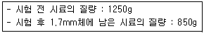
- 32%
- 35%
- 47%
- 56%
(정답률: 47%)
53. 토목섬유가 힘을 받아 한 방향으로 찢어지는 특성을 측정하는 시험법은 무엇인가?
- 인열강도시험
- 할렬강도시험
- 봉합강도시험
- 직접전단시험
(정답률: 45%)
54. 다음은 재료의 역학적 성질에 대한 설명이다. 옳게 연결된 것은?
- 경도 : 하중이 작용할 때 그 하중에 저항하는 재료의 능력
- 연성 : 하중을 받으면 작은 변형에서도 갑작스런 파괴가 일어나는 성질
- 소성 : 하중을 받아 변형된 재료가 하중이 제거되었을 때 다시 원래대로 돌아가려는 성질
- 푸아송(Poisson) 효과 : 재료가 하중을 받았을 때 변형이 일어남과 동시에 이와 직각방향으로도 함께 변형이 일어나는 현상
(정답률: 63%)
55. 수지 혼입 아스팔트의 성질에 대한 설명으로 틀린 것은?
- 신도가 크다.
- 점도가 높다.
- 가열 안정성이 좋다.
- 감온성이 저하한다.
(정답률: 53%)
56. 콘크리트용 혼화재로 실리카 퓸(Silica fume)을 사용한 경우 효과에 대한 설명으로 잘못된 것은?
- 콘크리트의 재료분리 저항성, 수밀성이 향상된다.
- 알칼리 골재반응의 억제효과가 있다.
- 내화학약품성이 향상된다.
- 단위수량과 건조수축이 감소된다.
(정답률: 58%)
57. 건설공사에 사용되는 흑색화약에 대한 설명으로 잘못된 것은?
- 황(S), 목탄(C), 초석(KNO3)의 미분말을 혼합한 것이다.
- 색은 흑회식이며, 밀도는 1.5~1.8g/cm3정도이다.
- 충격 또는 가열(260~280℃정도)에 의해 폭발한다.
- 폭발력이 강하여 위험하고 수중에서도 폭발시킬수 있어 수중폭파에 많이 사용된다.
(정답률: 69%)
58. 목재의 강도에 대하여 바르게 설명한 것은?
- 일반적으로 휨강도는 압축강도보다 작다.
- 일반적으로 섬유에 평행방향의 인장강도는 압축강도보다 크다.
- 일반적으로 섬유에 평행방향의 압축강도는 섬유에 직각 방향의 압축강도보다 작다.
- 일반적으로 전단강도는 휨 강도보다 크다.
(정답률: 62%)
59. 잔골재 A의 조립률이 2.5이고, 잔골재 B의 조립률이 2.9일 때, 이 잔골재 A와 B를 섞어 조립률 2.8의 잔골재를 만들려면 A와 B의 질량비를 얼마로 섞어야 하는가?
- 1:1
- 1:2
- 1:3
- 1:4
(정답률: 75%)
60. 콘크리트용 골재로서 부순 굵은골재에 대한 일반적인 설명으로 틀린 것은?
- 부순 굵은골재는 모가 나 있기 때문에 실적률이 적다.
- 동일한 물-시멘트비인 경우 강자갈을 사용한 콘크리트보다 압축강도가 10% 정도 낮아진다.
- 콘크리트에 사용될 떄 작업성이 떨어진다.
- 동일 슬럼프를 얻기 위한 단위수량은 입도가 좋은 강자갈보다 6~8%정도 높아진다.
(정답률: 53%)
4과목: 토질 및 기초
61. 사운딩에 대한 설명 중 틀린 것은?
- 로드 선단에 지중저항체를 설치하고 지반내 관입, 압입 또는 회전하거나 인발하여 그 저항치로부터 지반의 특성을 파악하는 지반조사방법이다.
- 정적사운딩과 동적사운딩이 있다.
- 압입식사운딩의 대표적인 방법은 Standard penetration test(SPT)이다.
- 특수사운딩 중 측압사운딩의 공내횡방 향재하 시험은 보링공을 기계적으로 수평으로 확장시키면서 측압과 수평변위를 측정한다.
(정답률: 62%)
62. 다음 표는 흙의 다짐에 대해 설명한 것이다. 옳게 설명한 것을 모두 고른 것은?
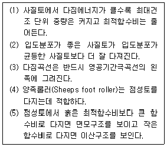
- (1), (2), (3), (4)
- (1), (2), (3), (5)
- (1), (4), (5)
- (2), (4), (5)
(정답률: 64%)
63. 현장에서 완전히 포화되었던 시료라 할지라도 시료채취 시 기포가 형성되어 포화도가 저하될 수 있다. 이 경우 생성된 기포를 원상태로 용해시키기 위해 작용시키는 압력을 무엇이라고 하는가?
- 구속압력(confined pressure)
- 축차응력(diviator stress)
- 배압(back pressure)
- 선행압밀압력(preconsolidation pressure)
(정답률: 47%)
64. 직경 30cm의 평판재하시험에서 작용압력이 30t/m2일 때 평판의 침하량이 30mm이었다면, 직경 3m의 실제 기초에 30t/m2의 압력이 작용할 때의 침하량은?(단, 지반은 사질토 지반이다.)
- 30mm
- 99.2mm
- 187.4mm
- 300mm
(정답률: 40%)
65. 다음 그림과 같은 p-q 다이어그램에서 Kf선이 파괴선을 나타낼 때 이 흙의 내부마찰각은?
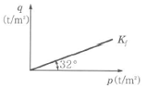
- 32°
- 36.5°
- 38.7°
- 40.8°
(정답률: 55%)
66. 기초폭 4m의 연속기초를 지표면 아래 3m 위치의 모래지반에 설치하려고 한다. 이때 표준관입시험 결과에 의한 사질지반의 평균 N값이 10일 때 극한지지력은? (단, Meyerhof공식 사용)
- 420t/m2
- 210t/m2
- 1⑤t/m2
- 75t/m2
(정답률: 48%)
67. 어떤 흙의 입도분석 결과 입경가적곡선의 기울기가 급경사를 이룬 빈입도일 때 예측할 수 있는 사항으로 틀린 것은?
- 균등계수는 작다.
- 간극비는 크다.
- 흙을 다지기가 힘들 것이다.
- 투수계수는 작다.
(정답률: 45%)
68. 통일분류법으로 흙을 분류할 떄 사용하는 인자가 아닌 것은?
- 입도 분포
- 에터버그 한계
- 색, 냄새
- 군지수
(정답률: 65%)
69. 통일분류법으로 흙을 분류할 때 시용하는 인자가 아닌 것은?
- 입도 분포
- 아터버그 한계
- 색, 냄새
- 군지수
(정답률: 63%)
70. 유선망의 특징에 대한 설명으로 틀린 것은?
- 균질한 흙에서 유선과 등수두선은 상호 직교한다.
- 유선 사이에서 수두감소량(head loss)은 동일하다.
- 유선은 다른 유선과 교차하지 않는다.
- 유선망은 경계조건을 만족하여야 한다.
(정답률: 55%)
71. 사면안정 해석방법에 대한 설명으로 틀린 것은?
- 일체법은 활동면 위에 있는 흙덩어리를 하나의 물체로 보고 해석하는 방법이다.
- 절편법은 활동면 위에 있는 흙을 몇 개의 절편으로 분할하여 해석하는 방법이다.
- 마찰원방법은 점착력과 마찰각을 동시에 갖고 있는 균질한 지반에 적용된다.
- 절편법은 흙이 균질하지 않아도 적용이 가능하지만, 흙속에 간극수압이 있을 경우 적용이 불가능하다.
(정답률: 53%)
72. 흙시료 채취에 대한 설명으로 틀린 것은?
- 교란의 효과는 소성이 낮은 흙이 소성이 높은 흙보다 크다.
- 교란된 흙은 자연상태의 흙보다 압축강도가 작다.
- 교란된 흙은 자연상태의 흙보다 전단강도가 작다.
- 흙시료 채취 직후에 비교적 교란되지 않은 코어(core)는 부(負)의 과잉간극수압이 생긴다.
(정답률: 39%)
73. 다음 그림과 같은 지표면에 2개의 집중하중이 작용하고 있다. 3t의 집중하중 작용점 하부 2m 지점A에서의 연직하중의 증가량은 약 얼마인가?(단, 영향계수는 소수점 이하 넷째자리까지 구하여 계산하시오)
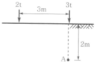
- 0.37t/m2
- 0.89t/m2
- 1.42t/m2
- 1.94t/m2
(정답률: 28%)
74. 어떤 흙에 대한 일축압축시험 결과, 일축압축강도는 1.0kg/cm2, 파괴면과 수평면이 이루는 각은 50°였다. 이 시료의 점착력은?
- 0.36kg/cm2
- 0.42kg/cm2
- 0.5kg/cm2
- 0.54kg/cm2
(정답률: 30%)
75. 내부 마찰각 30˚, 점착력 1.5t/m2 그리고 단위중량이 1.8t/m3인 흙에 있어서 인장균열(tension crack)이 일어나기 시작하는 깊이는 약 얼마인가?
- 2.2m
- 2.7m
- 2.87m
- 3.5m
(정답률: 45%)
76. 다음 그림과 같은 폭(B) 1.2m, 길이(L) 1.5m인 사각형 얕은 기포에 폭(B)방향에 대한 편심이 작용하는 경우 지반에 작용하는 최대압축응력은?(오류 신고가 접수된 문제입니다. 반드시 정답과 해설을 확인하시기 바랍니다.)
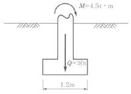
- 29.2t/m2
- 38.5t/m2
- 9.7t/m2
- 41.5t/m2
(정답률: 39%)
77. 그림과 같이 3m×3m크기의 정사각형 기초가 있다. Terzaghi 지지력공식
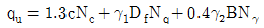
을 이용하여 극한지지력을 산정할 떄, 사용되는 흙의 단위중량 γ2의 값은?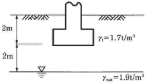
- 0.9t/m3
- 1.17t/m3
- 1.43t/m3
- 1.7t/m3
(정답률: 33%)
78. 어떤 흙의 변수위 투수시험을 한 결과 시료의 직경과 길이가 각각 5.0cm, 2.0cm이었으며, 유리관의 내경이 4.5mm, 1분 10초 동안에 수두가 40cm에서 20cm로 내렸다. 이 시료의 투수계수는?
- 4.95×10-4㎝/s
- 5.45×10-4㎝/s
- 1.60×10-4㎝/s
- 7.39×10-4㎝/s
(정답률: 35%)
79. 지표면에 4t/m2의 성토를 시행하였다. 압밀이 70% 진행되었다고 할 때 현재의 과잉간극수압은?
- 0.8t/m2
- 1.2t/m2
- 2.2t/m2
- 2.8t/m2
(정답률: 35%)
80. sand drain 공법에서 sand pile을 정삼각형으로 배치할 때 모래기둥의 간격은?(단, pile의 유효지름은 40cm이다.)
- 35cm
- 38cm
- 42cm
- 45cm
(정답률: 46%)